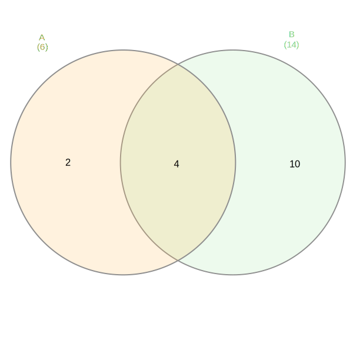
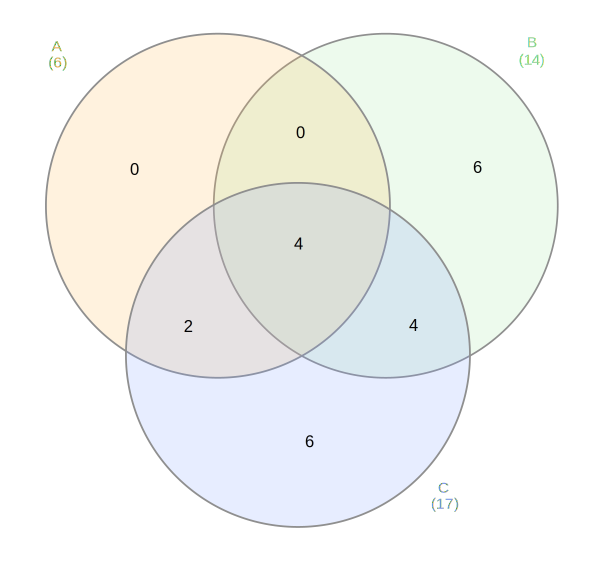
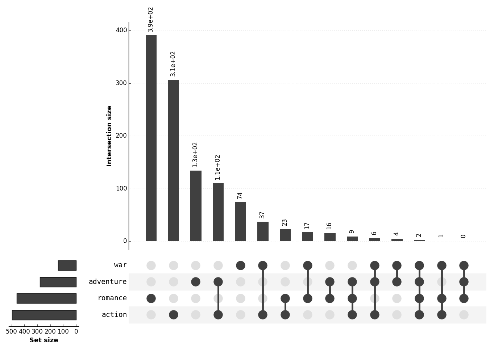
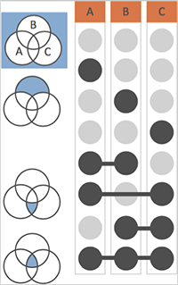
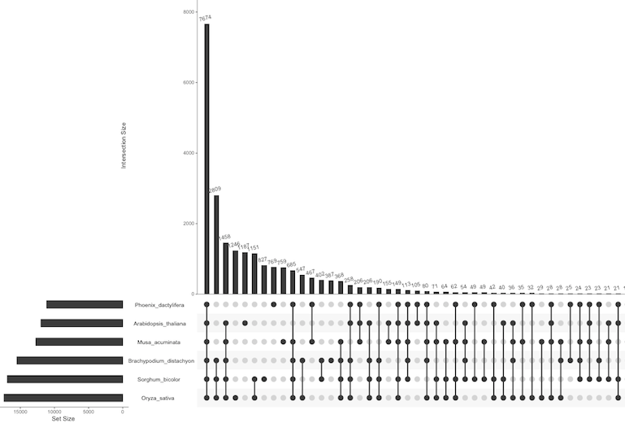
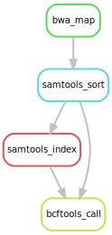
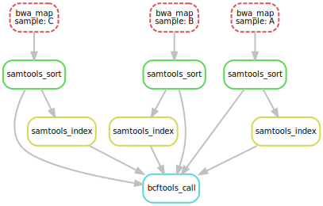

By Liang2 under CC 4.0 BY license
Esc to overview
← → to navigate
R & Python are used together in bioinfo
My personal preference for an analysis pipeline:
- In Python,
- Raw data parsing
- Job batching and general scripting
- In R,
- Statistical inference and modeling
- Genomic annotation lookup
Project-wise environment isolation
- How to maintain a local instead of system-wide installation?
- Large cluster without root permission
- To try / develop / debug a specific tool
- How to fix R version for different projects?
- How to isolate different package dependencies?
- Those issues apply to Python too
More importantly, how to create isolation for both Python and R?
manages everything
- Originally developed as an extended Python package manager
- Developed by Continuum Analytics as an open source project
- Conda manages not only python packages, but also their dependent libraries (e.g., libxml, mkl, and jdk)
- Packages are shipped in compiled binaries, saving deployment time
- An extended "virtual environment"
Install conda itself
(Well, it is pretty much a "Python" thing...)
- With/Without packages pre-shipped: Anaconda and Miniconda
- Different default Python version: 2.7 and 3.5+
No matter what version one installed, all can create identical environments
Conda be installed by pyenv.
Conda usage
conda install numpy matplotlib # install new packages
conda list # list installed packages
conda update # check if newer version exists
conda remove numpy scipy # remove packages
conda clean --all # clean caches and unused packages
Conda environment
Create isolated environments using different python version and installed packages, managed via conda env ...
$ conda create -n VENV_NAME python=3.5 # create a new env
$ source activate VENV_NAME # activate env
(VENV_NAME) $ # inside the isolated env
(VENV_NAME) $ conda install ...
(VENV_NAME) $ deactivate
$
Conda channels
- Channel contains a set of packages that are not shipped by default
- Only some popular packages are officially maintained
- R settings should not mess with the default Python channel
- Popular channels:
Manage R environment using conda
R itself and r packages are available in r channel.
All related dependencies are managed and automatically installed.
# plain r installation
conda install --channel r r
# install new R package (ex. ggplot2)
conda install --channel r r-ggplot2
Multiple R versions or settings can exist in separate conda environments.

- In Bioinformatics both R and Python are heavily used, including several C/C++ based libraries
- Manually managing the dependencies for R/Py/external packages is hard
- By using conda, all of them can be version controlled together
- Currently >1,500 packages are ready to use
Bioconda setup
conda config --add channels conda-forge
conda config --add channels defaults
conda config --add channels r
conda config --add channels bioconda
Note that the order of the channels the order of package discovery.
Bioconda usage
conda install bwa bowtie # install non-py/r tools
conda install samtools=0.1.19 # specify tool version
conda install r-upsetr # install r pkg
conda install bioconductor-rsamtools # r pkg on bioconductor
- Here lists all bioconda receipts(packages)
What if my packages are not supported?
- Bioconda has an detailed guide for creating a new receipt for your package.
- Skeletons for Python/CRAN/Bioconductor/Java/Perl/... tool
- Travis CI / Docker to test the building
- More info on its documentation
Visualizing intersecting sets
What visualization will you use to visualize the intersection of sets?
- For example, how results produced by 3 algorithms overlap with each other
- An example in genomics: comparison of mutation called by different tools
Use Venn diagram!
Plot a Venn diagram
There are multiple online / R tools:
Number of sets = 2 or 3


Venn diagram not practical for N ≥ 6
- The shape is too complicated to comprehend
- Shapes are fixed and cannot be proportional to the set size
- Hard to tell which interaction is important
- Most packages don't support beyond 6 sets
UpSet: a novel vis for set interaction

How to read UpSet plot
- Connections of dots represent different set intersection
- Each bar map to each intersection
- Order intersections by their size
- Intersections can be clipped to reduce complexity

Ref: UpSet official website

The banana plot redrawn
An analysis pipeline
bwa mem genome.fa A.fastq | \
samtools view -Sb - > mapped_reads/A.bam
samtools sort -T sorted_reads/A \
-O bam mapped_reads/A.bam > sorted_reads/A.bam
samtools index sorted_reads/A.bam # generate A.bam.bai
# repeat for A, B, C fastq
samtools mpileup -g -f genome.fa {A,B,C}.bam | \
bcftools call -mv - > calls/all.vcf
Pipeline by a bash script
fastq=( "A.fastq" "B.fastq" "C.fastq" )
for i in "${fastq[@]}"; do
# generate mapped.bam
# generate sorted.bam
# generate sorted.bam.index
done
samtools mpileup -g -f genome.fa sorted_reads/{A,B,C}.bam | \
bcftools call -mv - > calls/all.vcf
Problem for bash script
- Always rerun from the beginning even when only a few of the inputs or intermediate files are altered
- Manual parallelization
- Scripts are hard to reuse
Snakemake
rule bwa_map:
input:
"data/genome.fa",
"data/samples/{sample}.fastq"
output:
"mapped_reads/{sample}.bam"
shell:
"bwa mem {input} | samtools view -Sb - > {output}"

Job dependency DAG graph

- Independent jobs can be parallelized
- Dotted jobs are complete; wont rerun
Extra goodies
- Submit jobs as cluster jobs (bsub, qsub, LSF, SLURM and etc)
- Logging
- Remote (S3, Dropbox and etc), temporary files
- Reusable rules
- Automatically build necessary conda env (3.9+)
About Me
- 亮亮, Liang2 or Bobo
- Computational Biology PhD student at Washington Univsity in St. Louis (WUSTL)
- Speak Python and R
- Staff of PyCon TW 2014–2016
- Current open source project:
Python official doc translation